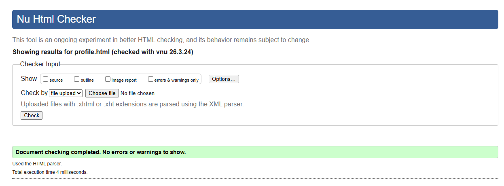
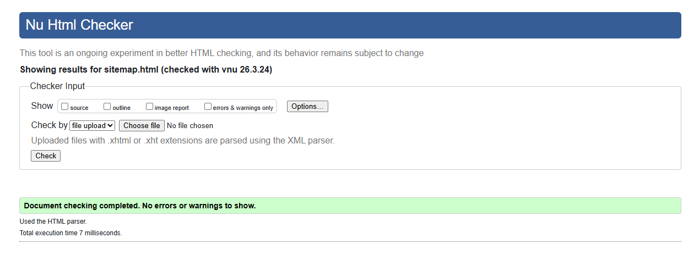
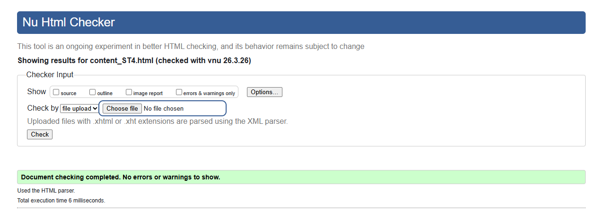

.png)
Validation - Student 4
User Profile Validation
The User Profile page was tested to ensure all interactive features function correctly. I verified that each step button correctly triggers prompts and that user input is stored and displayed dynamically on the page.
I also tested the validation logic to ensure that the age field only accepts numeric values, while name and role fields only accept alphabetic characters. Invalid inputs trigger error messages and require the user to re-enter data.
The progress bar updates accurately based on completed fields, and skipped items are tracked and displayed correctly. This confirms that the JavaScript logic works as intended.

Sitemap Validation
The sitemap was tested to ensure that all links correctly navigate to their respective pages. Each node in the SVG acts as a clickable link, and hover interactions were checked to confirm that they respond visually.
I also validated the structure of the SVG to ensure all elements are correctly aligned and positioned. The layout was adjusted so that section labels sit evenly between connector lines, improving readability and visual balance.
The sitemap was tested across different screen sizes to ensure it scales correctly without breaking the layout.

Content Page Validation
The content page was tested to ensure that all text, images, and links display correctly. I checked that images load properly and include alt text for accessibility.
The structure of the page was validated to ensure that headings, paragraphs, and lists are used correctly. This improves readability and ensures the page is well-organised.
I also reviewed the content to ensure it is clear, relevant, and appropriate. The layout was tested to confirm that spacing and styling remain consistent across different screen sizes.

Code Validation
I used online validation tools such as the W3C HTML and CSS validators to check my code. Any errors identified were corrected to ensure the pages meet web standards.
This process helped ensure that my code is clean, well-structured, and free from major syntax issues.